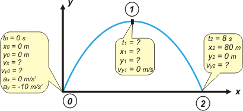

|
NO ME SALEN
PROBLEMAS RESUELTOS DE FÍSICA
(Tiro oblicuo)
|
|

|
 |
NMS c5.06- Un cuerpo es lanzado desde el piso en tiro
oblicuo, y toca el piso al cabo de 8 s, a 80 m del
lugar de lanzamiento. Su altura máxima y su velocidad
en dicha altura son:
a) 80 m y 10 m/s; b) 80 m y 40 m/s; c) 40 m y 10 m/s;
d) 40 m y 40 m/s; e) ninguna es correcta
|
|
Muchos estudiantes y estudiantas están tentados y tentadas de resolver este problema apelando a consideraciones de simetría del tiro oblicuo. Es cierto que el tiro oblicuo goza de ciertas simetrías -y no me parece mal destacarlas- y, también, que se pueden aplicar para resolver este problema. Aunque no siempre el TO es totalmente simétrico. Sólo lo es cuando las alturas inicial y final son iguales y cuando (eso todavía no nos preocupa) no hay pérdida de energía. De todos modos, el problema éste podemos resolverlo con el método de siempre y sin apelar al criterio de simetría que en este caso nos dice, por ejemplo, que la altura máxima se alcanza a los 4 s de haber partido. Haremos de cuenta que no lo sabemos. Pegale un vistazo al esquema. |

|
|
| cuando armás un esquema al mismo tiempo estás eligiendo un Sistema de Referencia |
|
¿Cuántas ecuaciones horarias describen este problema? Tres, porsupu, como todo TO. Para hallarlas basta con reemplazar las constantes (to , xo , yo , vx , voy , y g) de las ecuaciones generales de los tiros oblicuos:
x = xo + vx ( t – to )
y = yo + voy ( t – to ) + ½ g ( t – to )²
vy = voy+ g ( t – to )
En el esquema, en el cuadradito que habla del punto 0, están todas las constantes que necesitamos para armar las ecuaciones que describen el movimiento del cuerpo.
x = vx . t
y = voy . t – 5 m/s² . t²
vy = voy – 10 m/s² . t
|
|
|
Esta es la parte importante del problema; miralas, disfrutalas, esas tres ecuaciones que quedaron ahí escritas describen todo el movimiento, todo el fenómeno. Mirá cómo hablan de todos los instantes, de todas las posiciones.
Lo que resta ahora es muy sencillo; basta con que les pidamos a las ecuaciones del cuerpo que hablen de los puntos de interés en el problema: el 1 y el 2. A la ecuación de velocidad vertical le vamos a dar descanso en el punto 2. |
|
|
 |
x1 = vx . t1 |
|
[1] |
| y1 = voy . t1 – 5 m/s² . t1² |
|
[2] |
| 0 m/s = voy – 10 m/s² . t1 |
|
[3] |
| 80 m = vx . 8 s |
|
[4] |
| 0 m = voy . 8 s – 5 m/s² . 64 s² |
|
[5] |
|
|
Estas son las ecuaciones especializadas para los instantes que a vos te interesan,
o sea,
el 1 y el 2. |
Me lo temía: quedó un sistema de tantas ecuaciones como incógnitas (5x5), en las que las incógnitas, si sabemos interpretarlas, son las que nos pide el enunciado del problema. Quiere decir que acá terminó la física del problema... lo que resta es álgebra. Y es bastante sencilla. Si lo mirás con cariño te das cuenta de que las dos últimas forman un sistema chiquito (2x2). |
|
|
De la ecuación [4] despejás
vx = 80 m / 8 s = 10 m/s
lo mismo hacés con la [5], que también tiene una sola incógnita
voy = 320 m / 8 s = 40 m/s
sabiendo cuánto vale voy vamos a la [3] y despejamos t1
t1 = 40 m/s / 10 m/s² = 4 s
algo que ya sabíamos por el criterio de simetría. Con todos estos datos recién hallados nos vamos a las ecuaciones [1] y [2]
x1 = 10 m/s . 4 s = 40 m
algo que también ya sabíamos por el criterio de simetría. Por último:
y1 = 40 m/s. 4 s – 5 m/s² . 16 s² = 80 m
lo único que falta es interpretar que en el punto más alto la velocidad del cuerpo no es otra que su velocidad en x, ya que ahí, justo ahí, su velocidad vertical es cero |
|
|
| |
a) 80 m y 10 m/s |
es la respuesta correcta |
|
|
|
 |
|
|
| Me embola escribir m/s (metro sobre segundo) de esa forma, con la raya oblicua. Lo correcto es escribir la m justo arriba de la s y la raya horizontal. Pero no sé editar eso en html (me refiero a: sin tener que insertar una imagen). Lo mismo con 1/2, y para todas las expresiones fraccionarias grandes ni te cuento. Vos no lo hagas en tus apuntes, ni menos que menos en los exámenes. |
|
|
¿Tenés ganas de leer algo que te rompa la cabeza? |
| |
|
|
DESAFIO: First. Responder verdadero o falso: la trayectoria de todo tiro oblicuo está inscripta en un plano vertical. (Este lo tomé en un parcial y resultó masacre). Second.
Hallar en qué posiciones la velocidad del cuerpo tiene un ángulo de 45 grados. (Este otro es más clásico y se refiere al problema que resolvimos acá). |
|
 |
| Algunos derechos reservados.
Se permite su reproducción citando la fuente. También se permite que sea sin reproducción... ¿se comprende? Última actualización ago-06. Buenos Aires, Argentina. |
|
|
| |
|